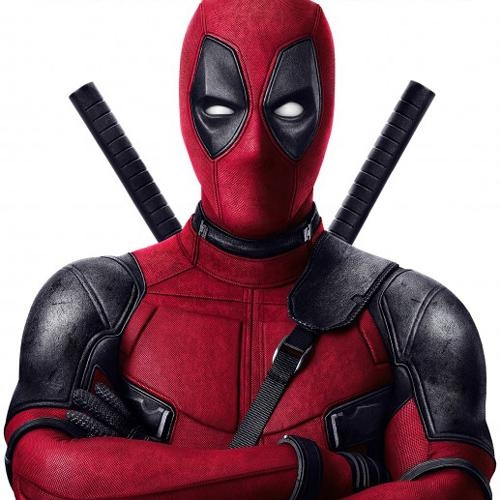
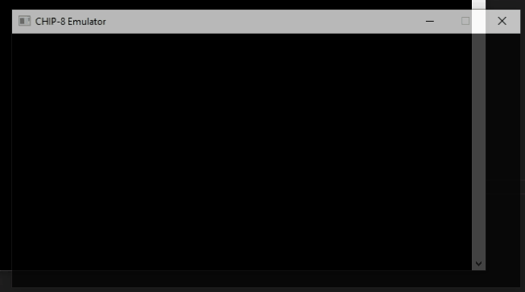
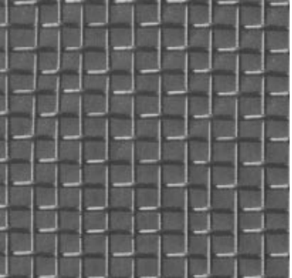
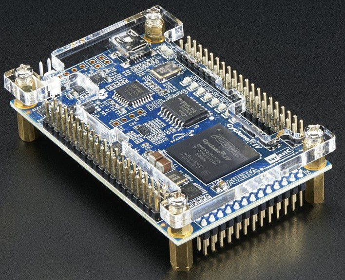
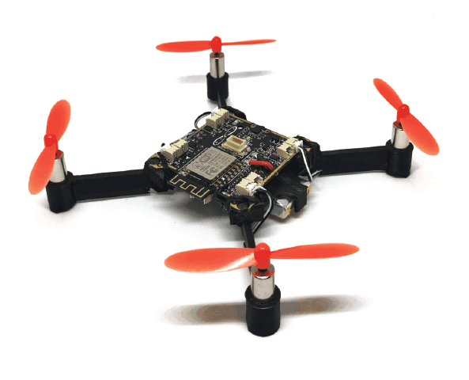

Projects

Combining Sketch and Tone for Pencil Drawing Production
March '21 - May '21
Implemented the research paper, Combining Sketch and Tone for Pencil Drawing Production, which generates Pencil Drawing from natural images using Java & OpenCV. The paper uses novel method for generating Line Drawing with Strokes and Pencil Texture Rendering to tranform the natural image into a pencil drawing. [code]

Chip-8 Emulator
Jan '21 - March '21
CHIP-8 is a 8-bit interpreted programming language used in 1970s and 1980s in 8-bit microcomputers. There are many classic videogames ported to CHIP-8 like Pong, Space Invaders, Tetris and Pac-Man. In this project, I developed a Chip-8 Emulator using C++. I implemented the opcodes, memory, timer, keyboard and graphics to emulate Chip-8 ROMs. Keyboard and Graphics were programmed using SDL2.0. [code]Real-Time Server Based Secure Communication
July '19 - April '20
In this project, we developed an end-to-end secure communication link with a programmable hardware block in the audio pipeline. We programmed the hardware block as an encryption engine to secure the communication link. The audio communication happens via a server and is a full-duplex link. [code // report]
Superscalar Architecture
January '19 - April '19
Designed a 16-bit microprocessor based on a superscalar architecture with fetch width of two Instructions and four different pipelines in VHDL. The architecture is based on a Turing Complete ISA with 17 Instructions and was successfully verified by simulation using Modelsim. [code]Data Transmission through Polymer Optical Fiber Link
January '19 - April '19
Polymer Optical Fiber provides a low-cost alternative, with the benefit of the high speed of light, for data transmission. In this project, we developed a module capable of transmitting digital data using Polymer Optical Fiber and a simple LED. We achieved data transmission rates up to 35 Mbps. [report]

Texture Synthesis using Non-Parametric Sampling
October '18 - November '18
In the project, we implemented a research paper on Texture Synthesis, discussing a novel texture synthesis technique based on the assumption of spatial locality. We successfully implemented and replicated the results shown in the paper using MATLAB. [code]

Inter-FPGA data Transmission using LVDS
May '18 - July '18
We developed a high-speed bidirectional data transmission link between two FPGAs using LVDS (Low Voltage Differential Signalling). The data flow is controlled using a simple request and acknowledgement interface along with FIFOs to store the data. The data transmission link is capable of transmitting at data rates up to 400 Mbps. [code]

Multiple Drone Tracking and Localization
November '17 - December '17
In the project, we localized the drone's position under a camera setup using Whycon ROS package and extracted 3D coordinates of multiple drones in real-time with accuracy up to 3cm. These coordinates were later used in a project to automate drone's flight movement based on its past location.Please refer to my CV for additional information.